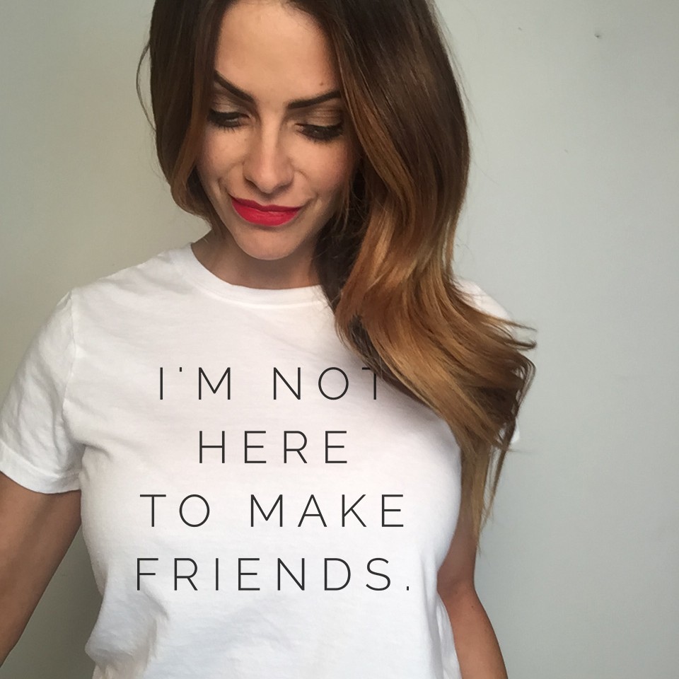

Contestans Confused To Find Out The Goal of the Reality Shows Is To Make As Many Friends As Possible
March 2, 2018

LOS ANGELAS- After explicitly stating in their confessional camera interviews that they were "not here to make friends" contestants were left dazed and confused when finding out that their goal over the next few months was to make as many friends as possible with there fellow competetors. Many were left in a catatonic state, unable to communicate in anything other than a series of grunts and snorts. Fortunetly, these members of the cast quickly found success competeting in the reality show across the lot, "The Bachelor Winter Games."